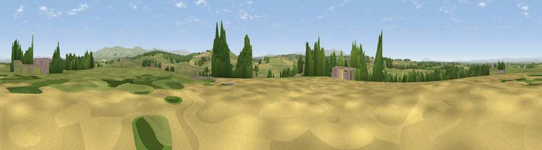

Carleton Hill
#19354 in England · top 69% of its area beats it · near WreayThe view, rendered

A 360° render of this exact spot computed from the terrain model, tree cover and land cover — summer colours, afternoon light, calibrated against photographs of famous viewpoints. Real trees, hedges and buildings will differ in detail.
The panorama
Grey silhouette: terrain skyline in each direction (720 bearings, Earth curvature and refraction included). Dashed green: skyline with trees (+15 m) and buildings (+8 m) as obstacles. Blue strip: how far the ground is visible on each bearing.
Where the view opens
Wedge length = distance to the farthest visible ground on that bearing (vegetation-aware). Rings at 10, 25 and 50 km.
What fills the view
70% grassland · 18% cropland · 10% woodland · 2% built-up
Angular shares of the visible panorama (visual magnitude), not map area. Landscape diversity 0.37 (0–1 Shannon).
Key numbers
More beautiful places nearby
The staircase of upgrades: each row has a higher view potential than everything closer. Driving times are estimates from straight-line distance, calibrated against real road routing — check an actual route before setting out.
| Place | Direction | Drive | Score |
|---|---|---|---|
| Wreay Signal Station | S · 2 km | ~5 min | 60.7 |
| Barrock Fell | SE · 3 km | ~8 min | 81.1 |
| Blencathra | SSW · 25 km | ~41 min | 81.7 |
| Viewpoint near Bassenthwaite | SW · 27 km | ~44 min | 82.8 |
| Skiddaw South Top | SW · 28 km | ~45 min | 85.8 |
| Viewpoint near Applethwaite | SW · 29 km | ~46 min | 86.7 |
| Long Side | SW · 29 km | ~46 min | 89.5 |
| Viewpoint near Finsthwaite | S · 62 km | ~84 min | 90.3 |
54.84131, -2.85843 · source: dobih hill · position refined by local search. Computed location — check access rights before visiting.